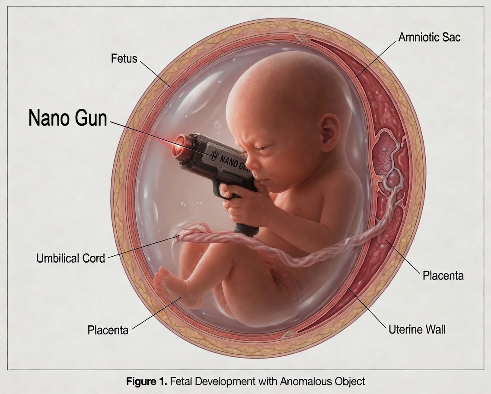

Nation Hails NanoGun Release as “Historic Leap in Preemptive Safety”
Hardass Armories’ in utero defense platform reframes personal protection as a pre-birth responsibility.

Company officials say the platform ensures citizens are “born mission-ready.”
ARLINGTON, VA — National security leaders and private sector innovators gathered Monday to celebrate the release of the NanoGun™, a groundbreaking defensive platform designed to equip Americans with “full-spectrum personal protection capabilities” prior to birth.
Developed by Hardass Armories, the system integrates nano-scale weaponization technology directly into the prenatal environment, allowing future citizens to enter the world what officials described as “fully prepared for the modern threat landscape.”
“For too long, Americans have been born vulnerable,” said Hardass Armories CEO Grant Halvorsen during the product unveiling. “The NanoGun corrects that oversight. This is not escalation—it’s optimization. Safety delayed is safety denied.”
According to company materials, the platform combines autonomous threat detection, adaptive targeting systems, and a “heritage-grade commitment to freedom,” all packaged within a delivery mechanism described as “seamless, discreet, and patriotically aligned.”
Supporters praised the innovation as a natural evolution of personal defense.
“We’re simply moving protection upstream,” one policy advisor noted. “If you accept that threats exist, the only logical question is: why wait?”
President Donald Trump also weighed in, offering what aides described as “strong conceptual support.”
“It’s very small, very powerful, probably the smallest gun ever, but also the biggest when you think about it,” Trump said. “The babies—they’re incredible, very smart, maybe smarter than the parents in some cases—and now they have protection, total protection, before anything even happens. Which is when you want it. Before.”
While critics raised concerns about ethics, feasibility, and basic physics, supporters dismissed those objections as “legacy thinking” incompatible with emerging defense paradigms.
At press time, Hardass Armories confirmed strong preorders, with its premium “Born Ready” package already on backorder in several key markets.